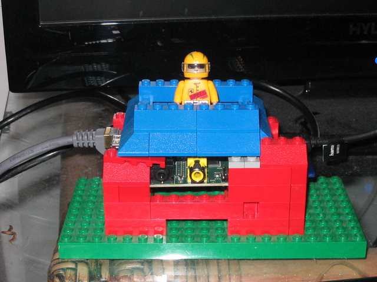
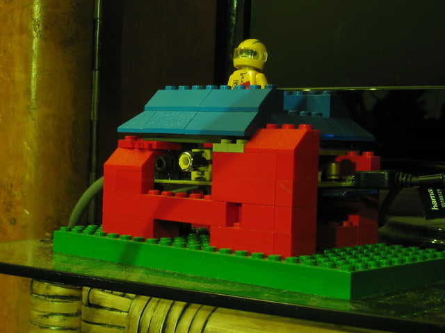
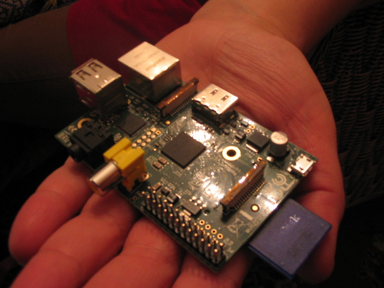
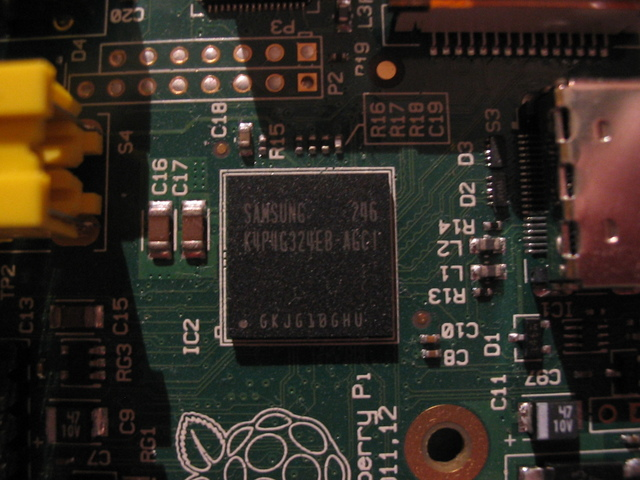

My first day with the Raspberry Pi
At the end of 2012 - just a day or two before Christmas - I got my own Raspberry Pi from RS Components.
The first thing I did was building a LEGO case for it:
 
It's not a top engineering feat for sure, but the spaceman is kinda cool. :-)
For those of you who don't know what a Raspberry Pi is: it's a credit-card sized mini-computer developed by a bunch of elite computer geeks who call themselves the Raspberry Pi Foundation. It looks like this:

It has an SD card reader, two USB 2.0 ports, a 10/100 Ethernet port, a HDMI connector, an RCA video out, a 3.5 mm audio jack and a bunch of programmable pins which can be used to interface it with other devices. It can be powered through a micro USB port, using any cell phone charger which can supply the steady 5V and 700 mA it needs.
The heart of the machine is this SoC (System on a Chip) in the center of the board:

This small chip contains an ARM 1176JZF-S CPU, a Broadcom VideoCore IV GPU and 512 MB RAM (these are the specs for my Model B - there is also a Model A with only 256 MB RAM, one USB port and no Ethernet).
To minimize the cost, there is no on/off button or reset switch: the only way to reset the system is to pull the plug and insert it again.
The boot process
At startup, the VideoCore IV GPU gets control and initiates the boot process which consists of the following steps:
- The GPU executes the first stage bootloader which is stored in ROM
- The first stage bootloader looks for a FAT32 partition on the SD card (this must be the first partition of the possible four) and loads the second stage boot loader from the file
bootcode.bininto the L2 cache bootcode.bininitializes the 512 MB SDRAM in the SoC, and loads the third stage loader fromstart.elfinto main memory (this binary contains the GPU firmware as well)start.elfreads the fileconfig.txtand configures the system accordinglystart.elfreads a kernel command line fromcmdline.txtand a kernel image fromkernel.img- the GPU passes control to the ARM CPU which starts executing the kernel
- the kernel mounts a root partition from somewhere (typically from the second partition of the SD card), and runs
/sbin/initas usual
On my first day, I just wanted to make sure that everything works as it should, so I downloaded a pre-built Linux distribution image from the foundation's website - which contains both the FAT32 partion mentioned above, plus an ext4 filesystem on the second partition serving as the root fs for Linux - and copied it to the SD card:
wget http://downloads.raspberrypi.org/images/raspbian/2012-12-16-wheezy-raspbian/2012-12-16-wheezy-raspbian.zip
unzip 2012-12-16-wheezy-raspbian.zip
cat 2012-12-16-wheezy-raspbian.img > /dev/sdb(As you see, the SD card was seen as /dev/sdb by my Linux netbook.)
After the image had been written to the card, I removed it from the netbook, inserted it into the SD card slot on the Raspberry Pi, connected the HDMI cable to my TV, powered on the gizmo and watched the messages of the kernel - and later Raspbian - fly by, finally followed by a login prompt.
Success!